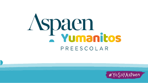
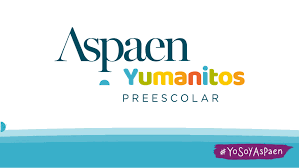

Mi etapa educativa comienza en el seno de mi familia, a través de mis padres. Mi mamá profesora de la institución preescolar “Aspaen Yumanitos” y mi padre un apasionado de la lectura e historia me enseñaron las bases del conocimiento, que consisten en la lectura, la escritura y lo más importante a la hora de querer aprender, la curiosidad. Nuestro mundo está lleno de conocimiento y la educación debe darnos las guías para poder acceder a ellos, como fue mi caso. |
Ya pasado un tiempo si entré a una institución educativa, precisamente donde trabaja mi mamá. Dentro de Aspaen Yumanitos reforzaría mis bases que me permitían avanzar en mi proceso educativo que desarrollaría y que sigo desarrollando en la comunidad Aspaen, también me ayudaría a conectar con otros niños que me acompañarían en este proceso y reforzarían mi parte social. |
 
